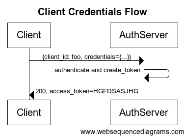

Dave Syer, 2013
Twitter: @david_syer
Email: dsyer@gopivotal.com
A Client application, often web application, acts on behalf of a User, but with the User's approval
Common examples of Authorization Servers on the internet:
Resource Servers are free to interpret tokens
Example token contents:
A client can act its own behalf (client_credentials grant):

The Client wants to access a Resource on behalf of the User

A client can act on behalf of a user (e.g. authorization_code grant):

Authorization Server authenticates the User
Client starts the authorization flow and obtain User's approval
Authorization Server issues an authorization code (opaque one-time token)
Client exchanges the authorization code for an access token.
Bearer tokens are authentication tokens for client applications. Once you have one you can act on behalf of a user, accessing resources:
$ curl -H "Authorization: Bearer <token>" resource.server.com/stuff
The resource server treats the request as if it came from an authenticated user.
client_id and maybe a
client_secret)client_credentials/authorize)/token)#1 and #4 are covered thoroughly by the spec; #2 and #3 not (for good reasons).
Goal: implement Resource Server, Authorization Server, and Client Application with sensible defaults and plenty of customization choices. Provides features for implementing both consumers and providers of the OAuth protocols using standard Spring and Spring Security programming models and configuration idioms.
{ "client_id":"vmc",
"exp":1346325625,
"scope":["cloud_controller.read","openid","password.write"],
"aud":["openid","cloud_controller","password"],
"user_name":"vcap_tester@vmware.com",
"user_id":"52147673-9d60-4674-a6d9-225b94d7a64e",
"email":"vcap_tester@vmware.com",
"jti":"f724ae9a-7c6f-41f2-9c4a-526cea84e614" }
Resources decode through:
/check_token) -> opaque#2 and #3 require key management infrastructure - resource server and authorization server need to agree on signing (and possibly encryption). Can be as simple as shared configuration file.
Resource Servers should check if they are the intended recipient of a token. No specific mechanism in OAuth2 spec.
In Spring OAuth every resource optionally has a "resource ID". It is copmared with the token in an authentication filter.
For encoded tokens, e.g. JWT has a standard field
audfor the audience of the token.
Minimum
Desirable
Per the spec scopes are arbitrary strings. The Authorization Server and the Resource Servers agree on the content and meanings.
Examples:
https://www.googleapis.com/auth/userinfo.profileemail, read_stream, write_streamcloud_controller.read, cloud_controller.write, scim.read,
openidAuthorization Server has to decide whether to grant a token to a given client and user based on the requested scope (if any).
scope=read,writeauthorities=readUses Spring Security concept of "authorities" attached to a client
Not implemented out of the box in Spring OAuth 1.0 (might be in 1.1)
Client Token
User Token
Clients often act on their own behalf (client_credentials grant),
and then the available scopes might be different. In Cloud Foundry we
find it useful to distinguish between client scopes (for user tokens)
and authorities (for client tokens).
An access token represents a user approval:

...
/
#